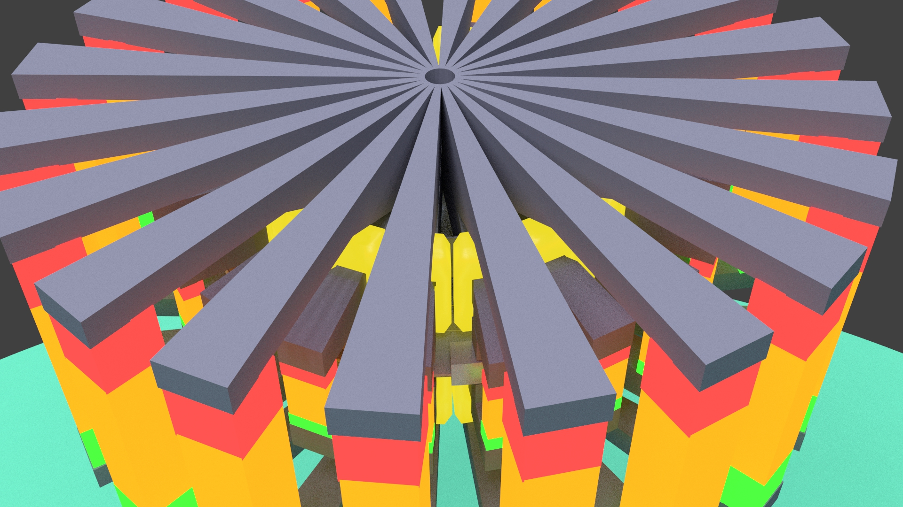
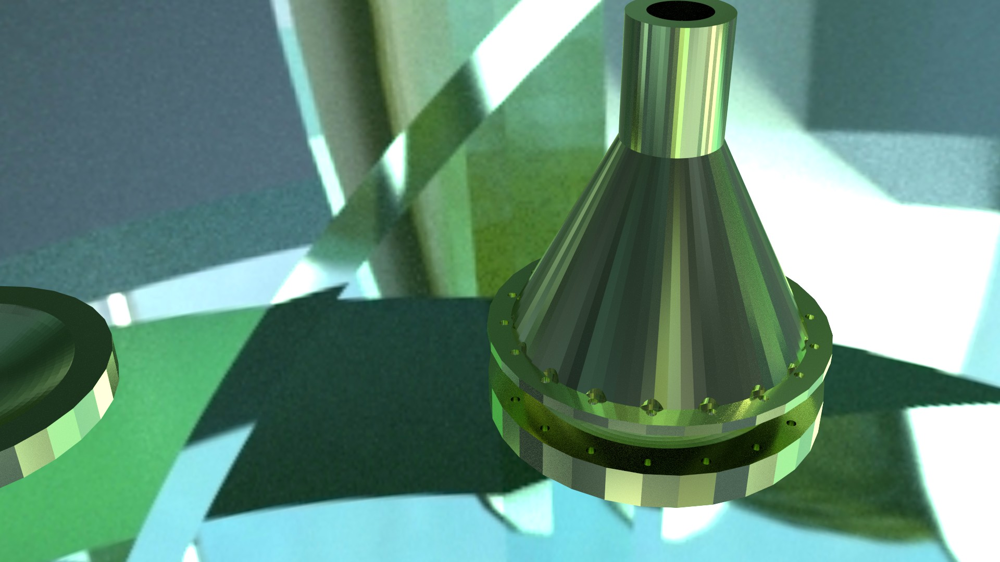
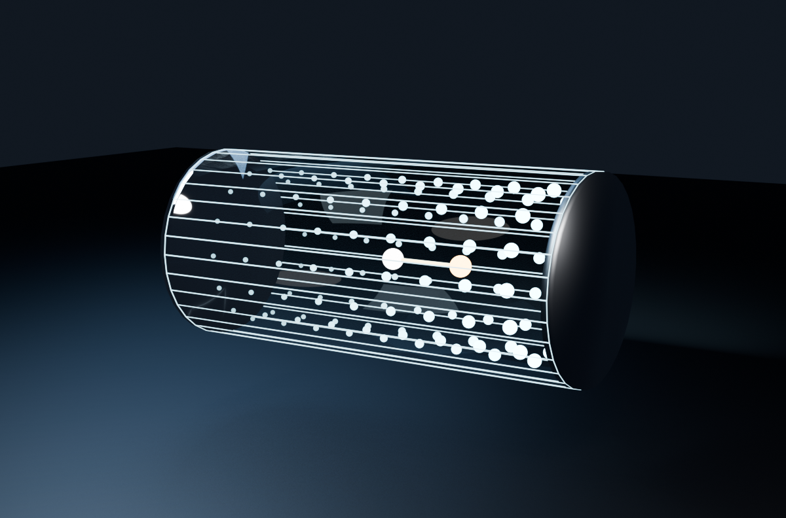
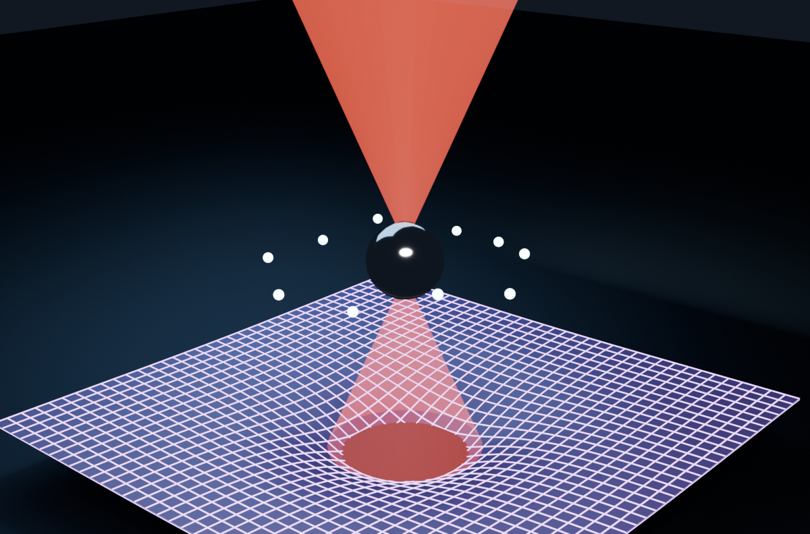
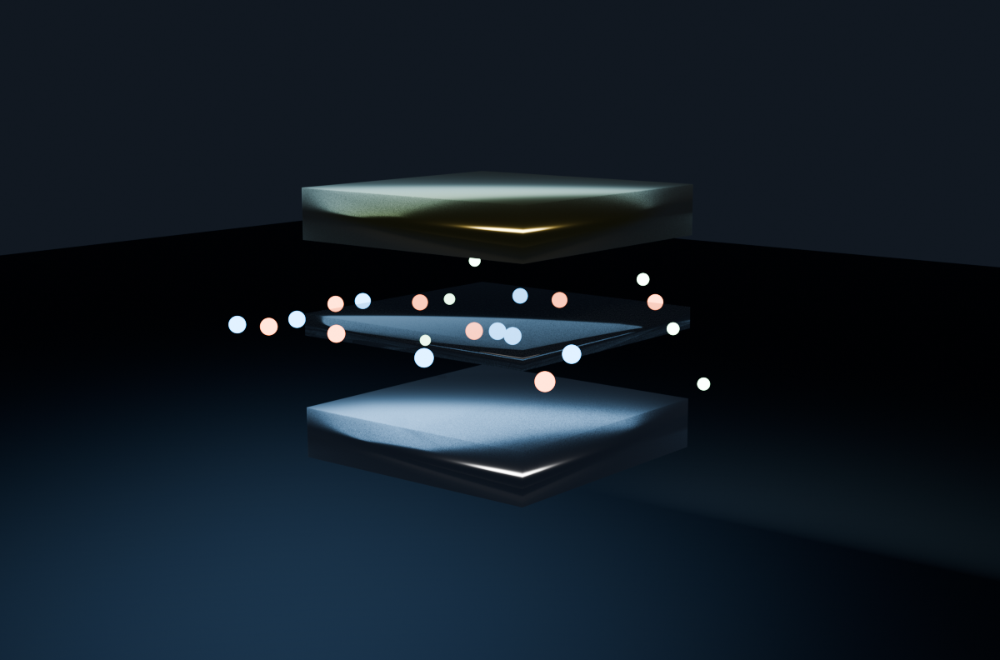
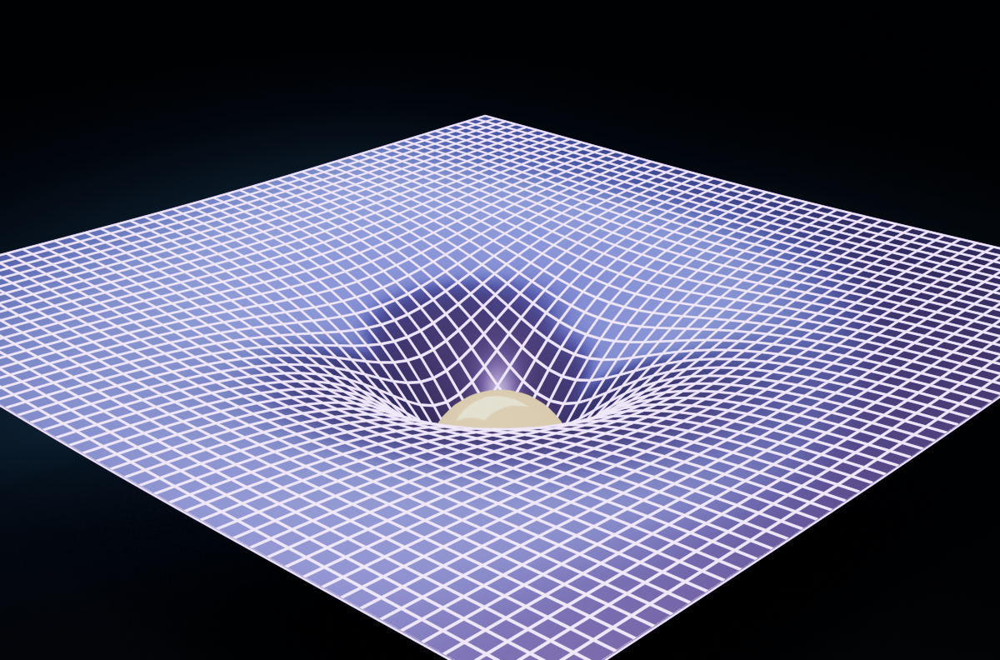

Joseph Wimsatt
Technician • Independent Researcher • Inventor
I'm an independent researcher and technician in the Texas Hill Country. I focus on cosmological theory, electronics, and industrial repair.
I evaluate and repair equipment from the ground up. I also design PCBs and manufacture custom replacement parts.
I'm a husband and father. I grow native plants and teach my kids by doing. I've also informally mentored students in general engineering at Jeffersontown High School in the Louisville, Kentucky area — design thinking and problem-solving fundamentals. My faith in Jehovah is the foundation of my life.
A man of many nationalities, rooted in one place.
Resume
Links to my work, and a short explanation of each.
Education
Trade Work
Mentoring

Generator Design — Load Stress Frame Transfer
Main mentoring project — a generator engineered to route load stress into the frame rather than the energy input axis.

Resonating Chamber — Electromagnetic Wave Experiments
Experimental model built to study electromagnetic wave behavior in a resonating chamber.
Hydraulic Ram Pump Build
Alternate hands-on project offered to students who chose not to pursue the main generator build — pumps water uphill using only the energy of flowing water, no electricity required.
Coil Winding & Electromagnetic Design
Comparing winding configurations to explore electromagnetic principles experimentally.
DC Pulse Circuit Design
Building and testing pulsed DC circuits to study switching and timing behavior.
Published Research

CM ≠ CG Separation Theory
Center of mass vs. center of gravity separation in electromagnetic resonant cavities.

EM Field Gravity
Electromagnetic energy-density gradients and differential spacetime curvature.
Books
Aeternus Vitalis — Book One

Left for dead in the Peruvian rainforest, a geology professor wakes three days later — healed, forty years younger, and carrying the greatest secret in human history. Written as his memoir three hundred years on. Fiction built on real science: piezoelectric quartz, ancient water engines, and the four-note mathematics of a heartbeat.
Watch the official book trailer · Watch the second trailer · More on YouTube
Cherubs of Honor
Where my mind has gone — a science fiction story of shared consciousness across the galaxy: a man asleep on Earth wakes behind the eyes of a special operations commander in the middle of a rescue that is going wrong.
Research
Tired Light Theory: A Unified Framework
A Unified Framework for Dark Matter, Stellar Anomalies, and Cosmic Structure via Higgs Field Interaction
Photons lose energy through interaction with the Higgs field as they travel across cosmological distances — a mechanism that explains redshift without requiring universal expansion. This framework makes specific, testable predictions:
- An effective Hubble parameter derived from Higgs coupling
- A predicted cosmic microwave background temperature of ~2.68 K (measured: 2.725 K)
- Structure in the cosmic microwave background temperature fluctuation spectrum
- A unified account of dark matter phenomena, stellar anomalies, and large-scale cosmic structure
Key Results


Related Publications
CM ≠ CG Separation Theory
An electromagnetic resonator chamber engineered to separate the center of gravity from the center of mass — asymmetric field concentration in the cavity shifts CG away from CM, offering a laboratory test of General Relativity.
EM Field Gravity
Optical tweezers used to levitate nanoparticles for quantum-gravity experiments carry their own gravitational contribution from concentrated tensor energy — an effect current experimental analyses overlook.
Adjacent Research Interests
Plasma-Shell Shielding
Plasma electromagnetics and novel electromagnetic shielding (plasma-shell concept).

Nanoscale Device Architecture
Electret charge, quantum tunneling through metal-insulator-metal layers, Brownian motion.

Higgs Field Physics
Higgs field physics beyond particle physics applications.
Projects

Stepper Motor Controller PCB
Custom KiCad design built for diagnostics and repair work across industrial, mechanical, electrical, and welding equipment — featuring a TMC2209 driver, 4PDT relay auto-sense circuit for unknown coil resistance measurement, 4S 18650 battery power, and dual Arduino Nano/Seeeduino XIAO header footprint. Two-layer FR4, ~100×80mm.

3D-Printed Carburetor Parts
Choke control knob and bracket with brass heat-set insert and split-clamp collar design. ABS+ material. Designed in FreeCAD, currently in production and available for purchase.

Custom Onan Muffler
Built for the Onan engine on a Miller engine-driven welder, with extra internal baffles and a stainless mesh wave diffuser. Polished finish, wire-fed flux-core welded construction.
Motion-Activated Kitchen Lighting
Motion-sensor-activated kitchen lighting system controlled by an Arduino. Wrote the firmware and designed the power controller circuit myself.
Smart Walking Stick
Walking stick fitted with a 5V light strip, an Arduino controller, and an MPU motion sensor. Double-tap gesture (via the MPU) adjusts brightness, and flipping the stick upside down triggers a help message.
Repair & Service
I evaluate and repair.
Oil Changes & Tune-Ups
Routine engine maintenance.
Rotor & Bearing Machining
Turning rotor slip rings and end bell bearings.
Carburetor Rebuilding
Full teardown, cleaning, and rebuild.
Control Board Repair
Component-level diagnosis and repair.
Engine & Circuit Evaluation
Diagnostic testing and evaluation of engines and electronic circuits.
PCB Design
Custom circuit board design in KiCad — just finished a Gerber file for an idle control module.